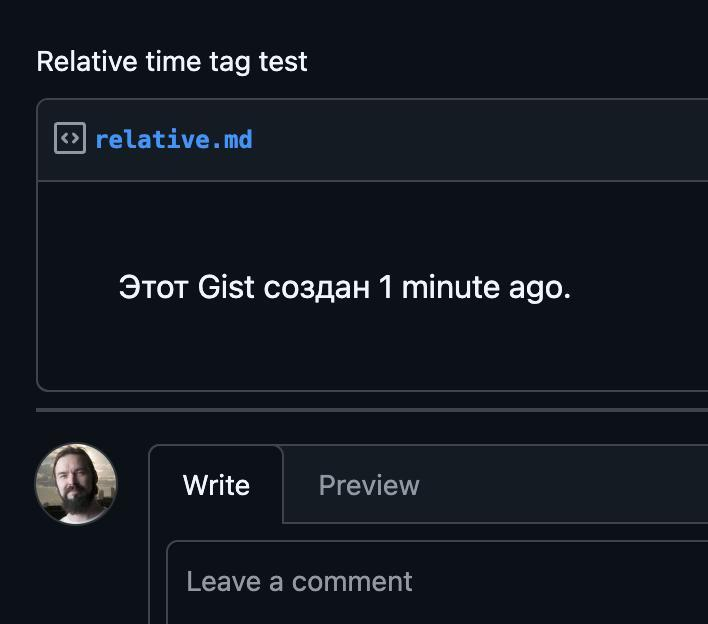

Отсчет времени в разметке на GitHub
Written on 2026-09-05

Недавно исследовал, как выглядят комментарии Codex в pull request на GitHub. В некоторых из них увидел время, показывающее, как давно агент сделал ревью. Сначала подумал, что это какая-то обычная часть интерфейса GitHub, но оказалось — нет.
В markdown разметку GitHub можно вставить специальный элемент <relative-time>. Ему передаётся момент времени, а на фронтенде он сам превращается в понятную надпись вроде «5 minutes ago». И продолжает её обновлять, даже если страницу не рефрешить.
Например, выглядит это так:
<relative-time datetime="2026-09-05T12:00:00Z">
5 сентября 2026
</relative-time>
Я сделал простой gist, где можно посмотреть на это вживую.
Мне кажется, такой элемент особенно хорошо подходит для документации. Можно пометить функцию как устаревающую и написать, что она будет удалена из API в определённую дату. Вместо статичной даты читатель увидит, сколько дней осталось до удаления.
Прикольно то, что relative-time — не внутренний компонент GitHub. Это отдельный веб-компонент, который можно поставить в свой проект.
Created with passion by 40Ants